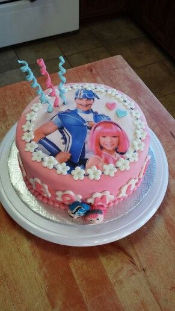

Pretty Cake

Ingredients
Steps
1. Preheat the oven to 350 degrees F (175 C). Grease and flour a 9-inch square cake pan
2. Cream sugar and butter together in a mixing bowl. Add eggs one at a time, beating briefly after each addition. Mix in vanilla.
3. Combine flour and baking powder in a separate bowl. Add the wet ingredients and mix well. Add milk and stir until smooth. Pour batter into prepared cake pan.
4. Bake in the preheated oven until the top springs back when lightly touched, 30-40 minutes.
5. Remove from the oven and cool completely before enjoying.